Accessibility-First Design in Data Science
Most data science outputs are inaccessible by default because we set the standard based on what we individually see, or at a minimum some careful selection of reds, greens and browns. The default matplotlib palette is not colour-blind safe. Default dashboard tables are not screen-reader navigable. Default conference slides use 10pt grey-on-grey labels that nobody beyond the second row can read. We treat accessibility as the audit step at the end of the project, some ticky box to tick by someone else, or ourselves (if we have time), and the result is a discipline that produces work that a substantial fraction of its audience cannot use, including readers with
An inaccessible plot is a failed plot because the plot exists to communicate, and a plot a chunk of your audience cannot decode is not communicating. I've said this when I was a full-time researcher: it isn't science if you can't communicate your findings. Effective communication is part of the work, and the same applies to data science if you conduct analysis and have interesting findings but cannot communicate them clearly. Accessibility is the design constraint that, when you take it seriously, forces better decisions about encodings, hierarchy, and content. When accessibility is built into your pipeline, it stops needing its own step and becomes the norm.
When you design for access first, you make fewer charts, label them better, and remove the visual decoration that was getting in the way. The beneficiaries go far beyond any single label - the next section is about how broad that audience really is - and ultimately they include you. Why bother doing work if your peers cannot use it?
Table of contents
- Inaccessible is not a niche concern
- Colour and redundant coding
- Temporal data and the line-chart problem
- The data-ink ratio and cognitive load
- Colour contrast and the WCAG standard
- Dashboards and the failure of the data wall
- Screen readers, alt text, and the visual gatekeeper problem
- Beyond the basics: chart-type-specific pitfalls
- Where data science papers and slides go wrong
- A practical accessibility-first checklist
- Why this is accessibility work, not box-ticking
- Common questions
- References

© Ken Reid. All rights reserved.
Quick jargon guide
- CVD (colour vision deficiency): the umbrella term for what most people call “colour blindness.” About 8% of men and 0.5% of women of European descent have some form.[6][7][8] Most cannot reliably distinguish certain reds and greens, but its far from the same between any two people.
- Redundant coding: using more than one visual channel to encode the same variable, e.g. colour and shape, or colour and line type. The point is that any single channel can fail and the reader still gets the information.
- Alt text: a short text description of an image, read aloud by screen readers. For a chart, good alt text describes what the chart shows and the main takeaway, not just “chart of data.”
- Screen reader: assistive software (JAWS, NVDA, VoiceOver) that reads page content aloud. Charts rendered as flat images are invisible to it; properly structured tables and labelled SVGs are not.
- Chart junk: Tufte’s term for visual decoration that does not encode data: 3D bars, gradient fills, drop shadows, pictograms, busy backgrounds. Reading the chart costs the viewer effort the data did not earn.
- Data-ink ratio: also Tufte. The proportion of ink (or pixels) that encodes data versus decoration. Higher is better, within reason.
- WCAG: Web Content Accessibility Guidelines. The relevant numbers for most data work are the contrast ratios: 4.5:1 for normal text, 3:1 for large text and graphical objects.
Inaccessible is not a niche concern
“Accessibility” in data science is not a small audience that you graciously serve at extra cost. It describes the conditions under which most of your audience actually consumes your work.
Your audience includes people with colour vision deficiencies; people reading printed-out greyscale copies in a meeting; people who are tired, distracted, on a phone, in a sunlit room with a glossy screen; in a Zoom call where your slide shrank to a thumbnail; domain experts who know the science but not your particular plotting library, and executives who have ten seconds before deciding whether to keep listening. The plot you optimise for “the reader sitting in front of a 27-inch retina display in a dark office, paying full attention” is a plot designed for just yourself.
This is the same argument that the visualisation research community has been making about reaching broader audiences: the assumption that everyone consumes charts as high-resolution colour images, with full attention, and with the same visualisation literacy as the author, is false, and it gatekeeps insight behind a purely visual medium.[2] Designing for access is not a charitable deed; it is acknowledging the basic requirements for usable visualisations.

© Ken Reid. All rights reserved.
Colour and redundant coding
The cleanest example of accessibility producing better design is colour. With colourblindness so prevalent: if you build a scatter plot where category is encoded by colour alone, and you use any of the default (why red/green?) palettes that ship with most plotting libraries, you have built a chart that a non-trivial fraction of your readers cannot decode.
The standard fix is
The accessibility constraint forced an honest question: what am I actually encoding with colour, and is colour the right channel for it? A lot of the time the answer is “I picked colour because that’s what the library defaulted to.” The fix is not just colour-blind-safe palettes (Viridis, ColorBrewer, Okabe-Ito); it is asking whether the variable should be on colour at all, or on position, or on shape, or whether you have too many categories on one chart and should split into small multiples.
The problem: colour-only encoding
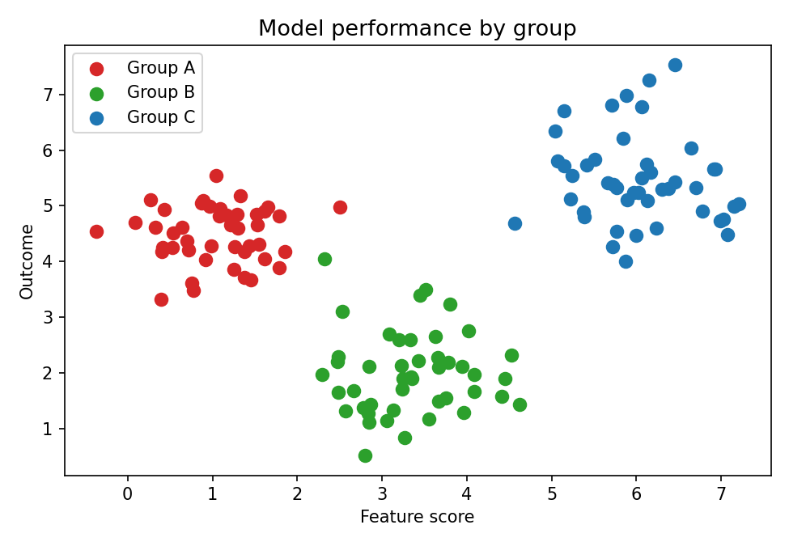
Colour-only encoding. Group A (red) and Group B (green) look identical under deuteranopia, the most common form of CVD. The legend also relies on colour, so it offers no fallback.
Python example
import matplotlib.pyplot as plt
import numpy as np
rng = np.random.default_rng(42)
GROUPS = ["Group A", "Group B", "Group C"]
CENTRES = [(1.0, 4.5), (3.5, 2.0), (6.0, 5.5)]
N_PER_GROUP = 50
SIGMA = 0.7
# Tab10 red and green are the most commonly confused CVD pair (~8% of men).
# Under deuteranopia, Group A (red) and Group B (green) map to near-identical
# hues. The legend compounds the failure: it also relies solely on colour,
# so it offers no independent fallback when colour cannot be decoded.
CVD_UNSAFE = ["#d62728", "#2ca02c", "#1f77b4"] # red, green, blue
fig, ax = plt.subplots(figsize=(6, 4))
for (cx, cy), color, label in zip(CENTRES, CVD_UNSAFE, GROUPS):
ax.scatter(
rng.normal(cx, SIGMA, N_PER_GROUP),
rng.normal(cy, SIGMA, N_PER_GROUP),
color=color,
s=50,
label=label,
)
ax.set(
title="Model performance by group",
xlabel="Feature score",
ylabel="Outcome metric",
)
ax.legend(title="Group")
fig.savefig("scatter_problem.png", dpi=150, bbox_inches="tight")
plt.close(fig)
The fix: redundant coding with Okabe–Ito
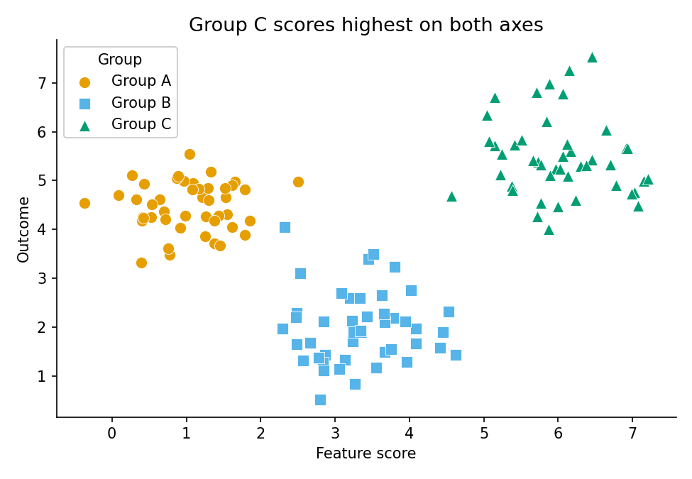
Redundant coding with the Okabe–Ito palette and distinct markers. Each group is identified by colour and shape, so the chart remains legible when either channel fails.
Python example
import matplotlib.pyplot as plt
import numpy as np
rng = np.random.default_rng(42)
GROUPS = ["Group A", "Group B", "Group C"]
CENTRES = [(1.0, 4.5), (3.5, 2.0), (6.0, 5.5)]
N_PER_GROUP = 50
SIGMA = 0.7
# Okabe & Ito (2008): the de-facto standard CVD-safe categorical palette.
# Distinguishable under protanopia, deuteranopia, and tritanopia,
# and retains separation when converted to greyscale for print.
OKABE_ITO = ["#E69F00", "#56B4E9", "#009E73"] # orange, sky-blue, teal
# Three independent visual channels carry group membership:
# 1. Colour (fails for some CVD types)
# 2. Marker shape (fails in greyscale if shapes are hard to see)
# 3. Edge contrast (reinforces shape at small sizes)
# Any one channel can be lost and the remaining two still separate the groups.
MARKERS = ["o", "s", "^"] # circle, square, upward triangle
fig, ax = plt.subplots(figsize=(6, 4), layout="constrained")
for (cx, cy), color, marker, label in zip(CENTRES, OKABE_ITO, MARKERS, GROUPS):
ax.scatter(
rng.normal(cx, SIGMA, N_PER_GROUP),
rng.normal(cy, SIGMA, N_PER_GROUP),
color=color,
marker=marker,
s=55,
edgecolors="white",
linewidths=0.5,
label=label,
)
# Title encodes the finding, not the chart type.
# A reader who only skims the title still learns the main result.
ax.set(
title="Group C scores highest on both dimensions",
xlabel="Feature score",
ylabel="Outcome metric",
)
ax.legend(title="Group")
ax.spines[["top", "right"]].set_visible(False)
fig.savefig("scatter_accessible.png", dpi=150, bbox_inches="tight")
plt.close(fig)
Temporal data and the line-chart problem
Line charts introduce an extra failure mode: the legend decode problem. When two lines cross on a time-series chart, the reader’s eye loses track of which line is which at the intersection and has to navigate back to the legend. If the lines are distinguished only by colour, and if the reader has CVD, re-identification becomes impossible or unreliable. The redundant encoding principle applies: give the reader colour and line style and marker shape, and any single channel can fail while the remaining two still separate every pair of lines.
Note also the title. A title that describes the chart (“monthly sales by product”) is an instruction to spend cognitive effort. A title that states the finding (“Product C declined throughout 2024; A grew steadily”) gives the reader the answer before they engage with the chart, and lets the chart itself serve as evidence. In time-pressured contexts, readers often only read the title, so make use of it!
The problem: colour-only line encoding
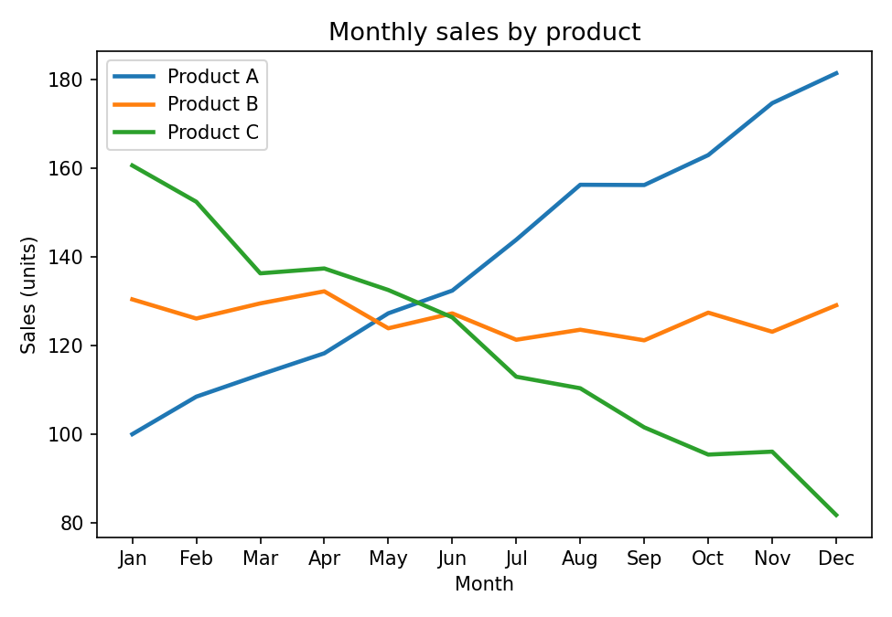
Colour-only line encoding. When A and B cross in summer, a reader with CVD has no fallback because both lines are the same hue and the legend cannot help.
Python example
import matplotlib.pyplot as plt
import numpy as np
rng = np.random.default_rng(7)
MONTHS = ["Jan","Feb","Mar","Apr","May","Jun","Jul","Aug","Sep","Oct","Nov","Dec"]
PRODUCTS = ["Product A", "Product B", "Product C"]
# Simulated monthly sales: A rising, B roughly flat, C declining.
series = [
np.linspace(100, 180, 12) + rng.normal(0, 4, 12),
np.linspace(130, 128, 12) + rng.normal(0, 4, 12),
np.linspace(160, 85, 12) + rng.normal(0, 4, 12),
]
# Matplotlib tab10 defaults give blue, orange, green.
# Colour is the only distinguishing channel. When A and B cross around
# mid-year, a reader with deuteranopia \u2014 or printing in greyscale \u2014
# has no independent signal to re-identify the lines.
TAB10 = ["#1f77b4", "#ff7f0e", "#2ca02c"]
fig, ax = plt.subplots(figsize=(6, 4))
for values, color, label in zip(series, TAB10, PRODUCTS):
ax.plot(MONTHS, values, color=color, linewidth=2, label=label)
ax.set(
title="Monthly sales by product", # describes the chart, not the finding
xlabel="Month",
ylabel="Sales (units)",
)
ax.legend(title="Product")
fig.savefig("line_problem.png", dpi=150, bbox_inches="tight")
plt.close(fig)
The fix: colour + line style + markers
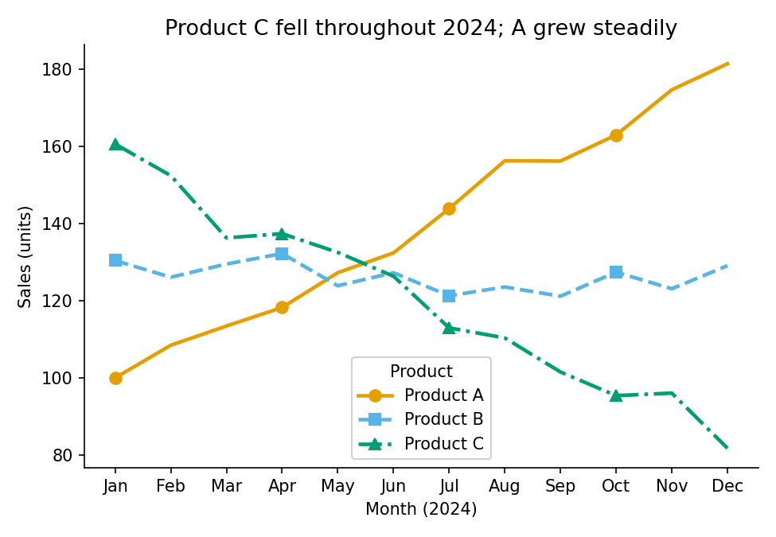
Three independent channels: colour, line style, and marker shape. Any one of them can be removed and the chart still works. The title states the pattern, so a reader who only skims the title still gets the main finding.
Python example
import matplotlib.pyplot as plt
import numpy as np
rng = np.random.default_rng(7)
MONTHS = ["Jan","Feb","Mar","Apr","May","Jun","Jul","Aug","Sep","Oct","Nov","Dec"]
PRODUCTS = ["Product A", "Product B", "Product C"]
series = [
np.linspace(100, 180, 12) + rng.normal(0, 4, 12),
np.linspace(130, 128, 12) + rng.normal(0, 4, 12),
np.linspace(160, 85, 12) + rng.normal(0, 4, 12),
]
# Bundle per-series style into a list of dicts.
# Adding a fourth product requires only one new entry; the plot loop is unchanged.
# Three independent channels encode series membership:
# colour (Okabe-Ito), line style, and marker shape.
# Strip any one and the other two still separate every pair of lines.
STYLES = [
{"color": "#E69F00", "linestyle": "-", "marker": "o"}, # orange, solid, circle
{"color": "#56B4E9", "linestyle": "--", "marker": "s"}, # sky-blue, dashed, square
{"color": "#009E73", "linestyle": "-.", "marker": "^"}, # teal, dash-dot, triangle
]
fig, ax = plt.subplots(figsize=(6, 4), layout="constrained")
for values, style, label in zip(series, STYLES, PRODUCTS):
ax.plot(
MONTHS, values,
**style,
markevery=3, # markers at every 3rd point: legible without crowding
markersize=7,
linewidth=2,
label=label,
)
ax.set(
title="Product C declined throughout the year; A grew steadily",
xlabel="Month (2024)",
ylabel="Sales (units)",
)
ax.legend(title="Product")
ax.spines[["top", "right"]].set_visible(False)
fig.savefig("line_accessible.png", dpi=150, bbox_inches="tight")
plt.close(fig)
The data-ink ratio and cognitive load
Tufte coined the term “
Cognitive load is also where the accessibility argument and the “just make it cleaner” argument fully collapse into the same argument. A reader with a
One concrete heuristic: every visual element on your chart should be defensible against the question “what does this encode?” Gridlines encode the scale. Axis labels encode units. Colour can encode category or magnitude. A drop shadow encodes nothing. A 3D extrusion encodes nothing. A logo in the corner of the plot area encodes nothing. If you cannot finish the sentence “this element is here because it encodes...”, the element should not be there.
The bar charts below use the same quarterly revenue data. The first accumulates several common forms of
The problem: chart junk
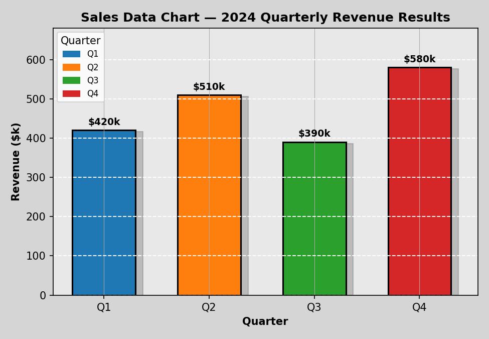
Every bar is a different colour, but category is already encoded on the x-axis, so the colours add nothing. The legend repeats the axis labels. The grey background, drop shadows, and crossed gridlines all cost the reader processing time without encoding any data.
Python example
import matplotlib.pyplot as plt
import matplotlib.patches as mpatches
QUARTERS = ["Q1", "Q2", "Q3", "Q4"]
REVENUES = [420, 510, 390, 580]
# Four different colours for four bars whose category is already on the x-axis.
# The colour variation encodes nothing: every bar is still "a quarter".
# The legend below compounds this by restating what the tick labels already say.
CHART_JUNK_COLORS = ["#1f77b4", "#ff7f0e", "#2ca02c", "#d62728"]
fig, ax = plt.subplots(figsize=(6, 4))
ax.bar(QUARTERS, REVENUES, color=CHART_JUNK_COLORS, edgecolor="black", linewidth=1.5)
ax.set_facecolor("#e8e8e8") # decorative background
ax.grid(True, axis="both", linestyle="--", color="white") # crossed gridlines add noise
ax.set(
title="Sales Data Chart \u2013 2024 Quarterly Revenue Results",
xlabel="Quarter",
ylabel="Revenue ($k)",
)
# Legend that duplicates the x-axis: the reader must now parse two
# representations of the same dimension simultaneously.
handles = [
mpatches.Patch(color=c, label=q)
for c, q in zip(CHART_JUNK_COLORS, QUARTERS)
]
ax.legend(handles=handles, title="Quarter")
fig.savefig("bar_problem.png", dpi=150, bbox_inches="tight")
plt.close(fig)
The fix: high data-ink ratio
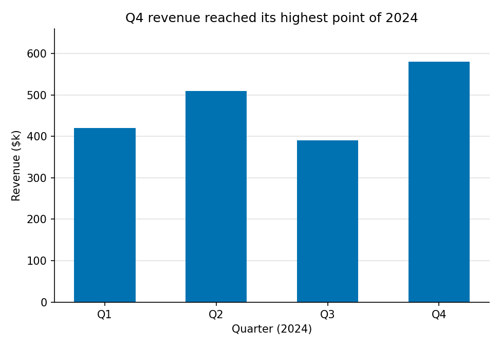
One colour (the x-axis already encodes category), no legend, subtle horizontal gridlines only, and a title that states the takeaway. Every remaining element earns its pixels.
Python example
import matplotlib.pyplot as plt
QUARTERS = ["Q1", "Q2", "Q3", "Q4"]
REVENUES = [420, 510, 390, 580]
# Okabe-Ito blue. One colour for the whole series:
# category is already on the x-axis, so a second colour channel adds noise.
BAR_COLOR = "#0072B2"
fig, ax = plt.subplots(figsize=(6, 4), layout="constrained")
ax.bar(QUARTERS, REVENUES, color=BAR_COLOR, width=0.55)
# Horizontal gridlines only, sitting behind the bars.
# They encode the scale; they earn their pixels.
ax.yaxis.grid(True, color="#e0e0e0", linewidth=0.8)
ax.set_axisbelow(True)
ax.set(
# Title encodes the finding: the reader has the answer before reading the chart.
title="Q4 revenue reached its highest point of 2024",
xlabel="Quarter (2024)",
ylabel="Revenue ($k)",
)
ax.spines[["top", "right"]].set_visible(False)
fig.savefig("bar_accessible.png", dpi=150, bbox_inches="tight")
plt.close(fig)
Colour contrast and the WCAG standard
The final common failure is contrast. Data scientists routinely use grey text, grey axis labels, or light-coloured title text because it looks clean. It does look clean on a well-calibrated screen in a dark room. It fails on a projector, in daylight, in greyscale print, and for readers with reduced contrast sensitivity, a substantial fraction of any audience over forty and a near-certainty in brightly lit conference rooms.
#aaaaaa on white, comes in at about 2.3:1. It fails by a factor of two. Getting to 4.5:1 requires something around #767676; getting to 7:1 (Level AAA) requires something around #595959 or darker. Near-black on white is the simplest and most universally legible choice. Below is a realistic low-contrast example that still fails AA.
The problem: low contrast
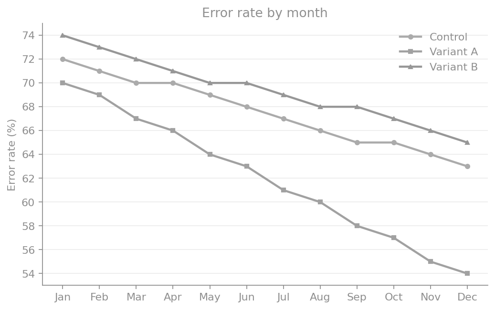
Low-contrast text and line colours create ambiguity about which series is improving. This is still plausible in real dashboards, but already hard to decode quickly in presentation conditions.
Python example
import matplotlib.pyplot as plt
import numpy as np
months = np.array(["Jan", "Feb", "Mar", "Apr", "May", "Jun", "Jul", "Aug", "Sep", "Oct", "Nov", "Dec"])
control = np.array([72, 71, 70, 70, 69, 68, 67, 66, 65, 65, 64, 63])
variant_a = np.array([70, 69, 67, 66, 64, 63, 61, 60, 58, 57, 55, 54])
variant_b = np.array([74, 73, 72, 71, 70, 70, 69, 68, 68, 67, 66, 65])
# Realistic low contrast foreground on white: ~3.2:1, still below AA.
LOW_CONTRAST = "#8f8f8f"
fig, ax = plt.subplots(figsize=(6.6, 4.2))
ax.plot(months, control, color="#ababab", linewidth=2.0, marker="o", markersize=4, label="Control")
ax.plot(months, variant_a, color="#a1a1a1", linewidth=2.0, marker="s", markersize=4, label="Variant A")
ax.plot(months, variant_b, color="#979797", linewidth=2.0, marker="^", markersize=4, label="Variant B")
ax.set(title="Error rate by month", ylabel="Error rate (%)")
ax.grid(True, axis="y", color="#ececec", linewidth=0.8)
for artist in (ax.title, ax.yaxis.label):
artist.set_color(LOW_CONTRAST)
ax.tick_params(colors=LOW_CONTRAST)
ax.spines[["left", "bottom"]].set_color(LOW_CONTRAST)
ax.spines[["top", "right"]].set_visible(False)
legend = ax.legend(frameon=False, loc="upper right")
for txt in legend.get_texts():
txt.set_color(LOW_CONTRAST)
fig.savefig("contrast_problem.png", dpi=150, bbox_inches="tight")
plt.close(fig)
The fix: WCAG-compliant contrast
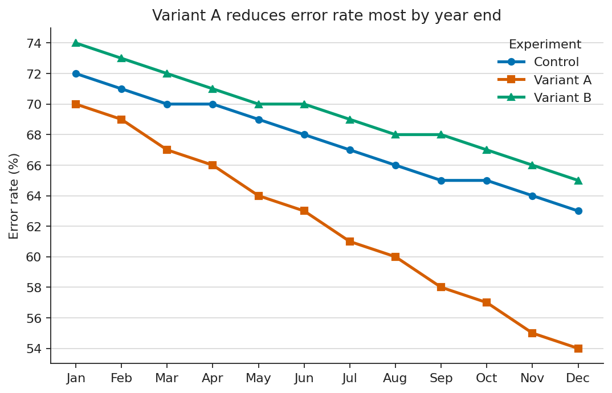
Near-black text and higher-separation line colours make all three trends immediately legible. The key takeaway is visible without zooming.
Python example
import matplotlib.pyplot as plt
import numpy as np
months = np.array(["Jan", "Feb", "Mar", "Apr", "May", "Jun", "Jul", "Aug", "Sep", "Oct", "Nov", "Dec"])
control = np.array([72, 71, 70, 70, 69, 68, 67, 66, 65, 65, 64, 63])
variant_a = np.array([70, 69, 67, 66, 64, 63, 61, 60, 58, 57, 55, 54])
variant_b = np.array([74, 73, 72, 71, 70, 70, 69, 68, 68, 67, 66, 65])
# Near-black text clears WCAG comfortably on white.
HIGH_CONTRAST = "#222222"
fig, ax = plt.subplots(figsize=(6.6, 4.2), layout="constrained")
ax.plot(months, control, color="#0072B2", linewidth=2.3, marker="o", markersize=5, label="Control")
ax.plot(months, variant_a, color="#D55E00", linewidth=2.3, marker="s", markersize=5, label="Variant A")
ax.plot(months, variant_b, color="#009E73", linewidth=2.3, marker="^", markersize=5, label="Variant B")
ax.set(title="Variant A reduces error rate most by year end", ylabel="Error rate (%)")
ax.grid(True, axis="y", color="#dddddd", linewidth=0.9)
for artist in (ax.title, ax.yaxis.label):
artist.set_color(HIGH_CONTRAST)
ax.tick_params(colors=HIGH_CONTRAST)
ax.spines[["left", "bottom"]].set_color(HIGH_CONTRAST)
ax.spines[["top", "right"]].set_visible(False)
legend = ax.legend(frameon=False, loc="upper right", title="Experiment")
legend.get_title().set_color(HIGH_CONTRAST)
for txt in legend.get_texts():
txt.set_color(HIGH_CONTRAST)
fig.savefig("contrast_accessible.png", dpi=150, bbox_inches="tight")
plt.close(fig)
Dashboards and the failure of the data wall
Dashboards are where these failures compound. A single bad chart is a missed opportunity. A dashboard of fifteen bad charts is an organisational problem.
A dashboard should give the user a fast, comprehensive read on the situation: they open it, get the bigger picture in seconds, and drill down only where something looks off. The literature on dashboards in time-critical settings is consistent that this only works when cognitive load is minimised.[4]
If the layout, encodings, or density force the user to think hard about how to read the dashboard, the dashboard has failed its primary purpose.
That failure is amplified for readers managing attention-regulation differences, post-stroke or post-concussion processing limits, or simple decision fatigue at the end of a long day.
The corporate failure mode is well-known: every team adds the chart they care about, nothing gets removed, the dashboard becomes a wall, and the wall is unreadable. The accessibility-first version forces a different question at each addition: can the intended user, in the intended condition, get the intended insight in the intended time? If not, the chart does not earn its place. The dashboard should optimise for reading speed, not for completeness of representation.
The same logic applies to tables. A table is a dashboard with one type of glyph. The accessible table is sortable, has proper <th> headers, has scope attributes so
Screen readers , alt text , and the visual gatekeeper problem
The next big failure mode is treating a chart as a flat image. A PNG of a bar chart, embedded in a web page or a PDF, contains zero machine-readable information about the data. A
The accessible version of the same chart usually contains three things:
- A meaningful
alt text that states what the chart shows and what the takeaway is. Not “Figure 3” and not “bar chart of revenue.” Something like: “Quarterly revenue by region, 2022–2025. EMEA grew steadily; APAC fell sharply in Q3 2024 and has not recovered.” - Structured data. A linked CSV, a properly marked-up HTML table, or an SVG with embedded data attributes. The chart is one rendering of the data; the data is the source of truth. Anyone who cannot see the chart can still use the data.
- A title that encodes the takeaway, not the chart type. “Q3 2024 revenue fell sharply in APAC” is both a title and a fallback for every reader who cannot process the visual. “Revenue by region and quarter” is a label.
Visual gatekeeping is when anyone is unable to access the information due to lacking functional colour vision, a large screen, a fast connection, or other accessibility barriers. The decision the chart was meant to inform proceeds without them. At scale, in dashboards used daily by organisations, papers cited widely, and slide decks that shape policy, this exclusion is not a minor UX inconvenience. It is a structural bias in who gets to participate in the conversation the data is supposed to enable.
Beyond the basics: chart-type-specific pitfalls
The earlier examples cover the universal traps: colour as the sole differentiator, low contrast, image-only rendering, and tooltip-only data. Each chart type adds its own failure modes. The cases below are the ones that come up most often in data science work.
1. Data tables
Tables are often pitched as the accessible fallback to a chart, but only if they are built as tables, not as visual approximations. The most common failure is using merged cells to imply hierarchy. Screen readers navigate linearly, announcing one header per cell. A merged top-level header breaks the row/column relationship and loses the reader's context. The fix: flatten the hierarchy so every data cell maps to exactly one column and one row header, put units in headers (not cells), and use zebra striping to help sighted readers track across rows without compromising contrast.
The problem: merged cells and missing semantics
| Mortgage approvals 2024 | ||
| Region | Rate Q1 | Rate Q2 |
| EMEA | 68.4% | 71.2% |
| APAC | 55.1% | 52.7% |
| Americas | 63.9% | 66.0% |
Merged header breaks row/column mapping. No scope attributes. Units embedded in every cell. No caption. No zebra striping. Low-contrast header text.
Markup example
<table>
<!-- Merged header: breaks row/column mapping for screen readers -->
<thead>
<tr>
<td colspan="3" style="background:#cccccc;">Mortgage approvals 2024</td>
</tr>
<tr>
<!-- No scope attributes; no units in headers -->
<td>Region</td>
<td>Rate Q1</td>
<td>Rate Q2</td>
</tr>
</thead>
<tbody>
<!-- Units embedded in every cell; no zebra striping -->
<tr><td>EMEA</td><td>68.4%</td><td>71.2%</td></tr>
<tr><td>APAC</td><td>55.1%</td><td>52.7%</td></tr>
<tr><td>Americas</td><td>63.9%</td><td>66.0%</td></tr>
</tbody>
</table>
The fix: flat headers with scope and units
| Region | Q1 approval rate (%) | Q2 approval rate (%) |
|---|---|---|
| EMEA | 68.4 | 71.2 |
| APAC | 55.1 | 52.7 |
| Americas | 63.9 | 66.0 |
Flat headers, units in the column header, scope attributes on every <th>, decimal alignment via tabular-nums, and zebra striping at WCAG-compliant contrast.
Markup example
<table>
<caption>Mortgage approval rate by region and quarter (2024)</caption>
<thead>
<tr>
<!-- Units live in the header, not in every cell. -->
<th scope="col">Region</th>
<th scope="col">Q1 approval rate (%)</th>
<th scope="col">Q2 approval rate (%)</th>
</tr>
</thead>
<tbody>
<tr>
<!-- scope="row" lets the screen reader announce
"EMEA, Q1 approval rate, 68.4" instead of just "68.4". -->
<th scope="row">EMEA</th>
<td>68.4</td><td>71.2</td>
</tr>
<tr>
<th scope="row">APAC</th>
<td>55.1</td><td>52.7</td>
</tr>
<tr>
<th scope="row">Americas</th>
<td>63.9</td><td>66.0</td>
</tr>
</tbody>
</table>
<style>
/* Tabular numerals align on the decimal without monospace fonts. */
td { font-variant-numeric: tabular-nums; text-align: right; }
/* Zebra striping at high contrast helps sighted scanning;
#f5f5f5 on white still passes WCAG for any text laid on it. */
tbody tr:nth-child(even) { background: #f5f5f5; }
</style>
2. Bubble charts
Humans estimate area poorly. Perception of bubble size scales sub-linearly with actual area: a bubble worth four times the value typically appears roughly twice as large. Overlaps compound this: small bubbles vanish behind larger ones, and hover tooltips lock out keyboard and motor-impaired users. The accessible version caps bubble count around 15, strokes every bubble with a high-contrast outline so boundaries remain visible through overlaps, and labels critical points directly on the canvas.
The problem: too many bubbles, jet colours, no labels
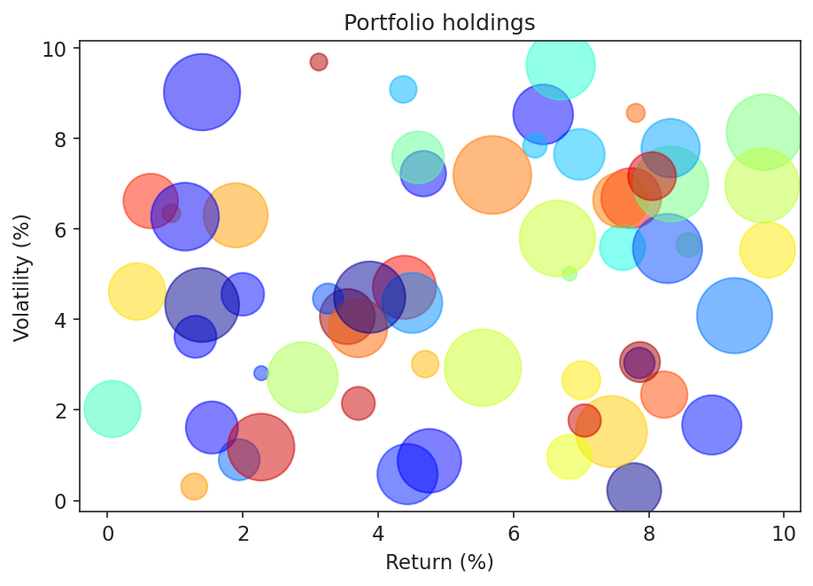
60 bubbles, jet colours encoding nothing, no strokes on overlaps, no direct labels. The title states the chart type, not a finding.
Python example
import matplotlib.pyplot as plt
import numpy as np
rng = np.random.default_rng(42)
N = 60 # far too many: area perception breaks down
x = rng.uniform(0, 10, N)
y = rng.uniform(0, 10, N)
size = rng.uniform(20, 1800, N)
# Jet: not perceptually uniform, not CVD-safe.
# Colour encodes nothing here -- all points are the same type of holding --
# but creates false salience for saturated red/yellow bubbles.
jet_colors = plt.cm.jet(rng.uniform(0, 1, N))
fig, ax = plt.subplots(figsize=(7, 4.6))
# No stroke: overlapping bubbles have no visible boundary.
ax.scatter(x, y, s=size, c=jet_colors, alpha=0.5)
ax.set(
title="Portfolio holdings", # generic -- no finding
xlabel="Return (%)",
ylabel="Volatility (%)",
)
fig.savefig("bubble_problem.png", dpi=150, bbox_inches="tight")
plt.close(fig)
The fix: capped count, strokes, direct labels
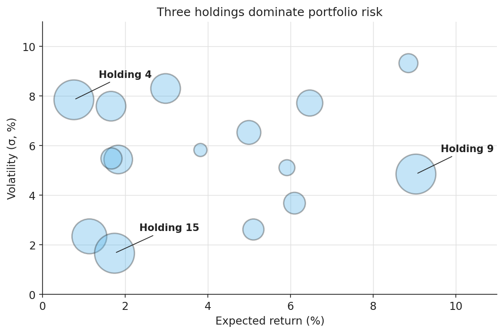
Fifteen bubbles, semi-transparent fill with a high-contrast stroke so every boundary is visible through overlaps, and direct labels on the three largest holdings.
Python example
import matplotlib.pyplot as plt
import numpy as np
rng = np.random.default_rng(11)
N = 15
returns = rng.uniform(0.5, 9.5, N) # x: expected return (%)
volatility = rng.uniform(0.5, 9.5, N) # y: volatility (sigma %)
capital = rng.uniform(120, 1800, N) # bubble area: capital allocated
# Cap N around 15-20. Beyond that, area perception breaks down and overlap
# resolution stops working even with strokes. If you have 200 points,
# a bubble chart is the wrong chart.
TOP_K = 3
top_idx = np.argsort(capital)[-TOP_K:]
INK = "#222222" # WCAG AAA stroke and label colour
FILL = "#56B4E9" # Okabe-Ito sky blue
ALPHA = 0.35 # low fill alpha so overlaps are visible
fig, ax = plt.subplots(figsize=(7, 4.6), layout="constrained")
# Stroke is the load-bearing channel here:
# fills overlap and merge, but a 1.4pt dark outline never disappears.
ax.scatter(
returns, volatility, s=capital,
facecolor=FILL, alpha=ALPHA,
edgecolor=INK, linewidth=1.4,
)
# Direct labels for the points that carry the takeaway.
# Tooltip-only labelling locks out keyboard, screen reader, and print users.
for i in top_idx:
ax.annotate(
f"Holding {i + 1}",
xy=(returns[i], volatility[i]),
xytext=(returns[i] + 0.6, volatility[i] + 0.9),
fontsize=10, fontweight="bold", color=INK,
arrowprops=dict(arrowstyle="-", color=INK, lw=0.8),
)
ax.set(
title="Three holdings dominate portfolio risk",
xlabel="Expected return (%)",
ylabel="Volatility (\u03c3, %)",
xlim=(0, 11), ylim=(0, 11),
)
ax.spines[["top", "right"]].set_visible(False)
ax.grid(True, color="#e0e0e0", linewidth=0.7)
ax.set_axisbelow(True)
fig.savefig("bubble_accessible.png", dpi=150, bbox_inches="tight")
plt.close(fig)
3. Venn diagrams
The standard Venn relies on overlapping translucent fills, and overlaps create new colours that fail two ways. The new hue often falls below WCAG contrast for any text laid on it, and CVD readers see overlaps as one of the source colours rather than a distinct third. The accessible version drops fill colour entirely, encodes set membership with distinct stroke styles (solid, dashed, dotted), and places every numeric label on a white background so strokes behind it never compromise legibility.
The problem: translucent fills, CVD-unsafe colours
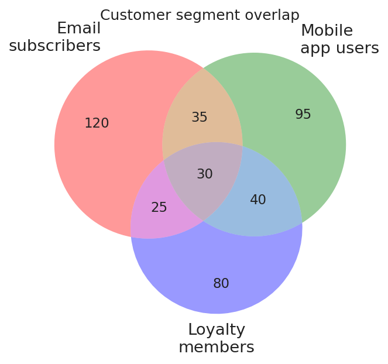
Default matplotlib_venn fills: semitransparent red, green, blue. Overlaps create new hues that fail contrast checks and are unreadable by CVD readers. Numbers lack background boxes.
Python example
import matplotlib.pyplot as plt
from matplotlib_venn import venn3
SUBSETS = (120, 95, 35, 80, 25, 40, 30)
LABELS = ("Email\nsubscribers", "Mobile\napp users", "Loyalty\nmembers")
fig, ax = plt.subplots(figsize=(6.8, 4.6))
# Default fills: semitransparent red, green, blue.
# Overlap regions generate orange, purple, and teal -- new hues that fail
# WCAG contrast and are unreadable by CVD readers.
# Numeric labels are rendered directly on coloured fills with no background.
venn3(subsets=SUBSETS, set_labels=LABELS, ax=ax)
ax.set_title("Customer segment overlap")
fig.savefig("venn_problem.png", dpi=150, bbox_inches="tight")
plt.close(fig)
The fix: stroke-only encoding with labelled regions
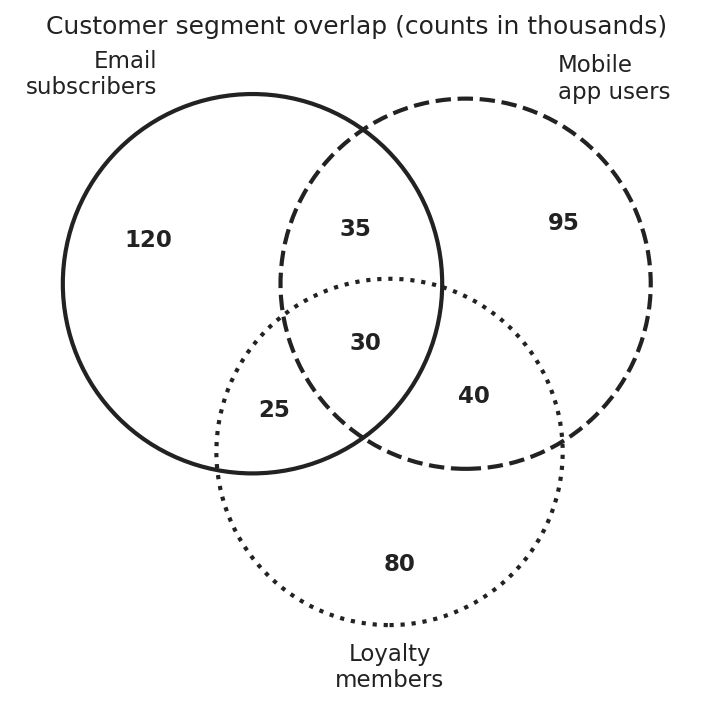
No fill colours. Set membership is encoded entirely by stroke style, and each numeric label sits on a white background so the strokes behind it never compromise legibility.
Python example
import matplotlib.pyplot as plt
from matplotlib_venn import venn3, venn3_circles
# (A_only, B_only, A_and_B, C_only, A_and_C, B_and_C, A_and_B_and_C)
SUBSETS = (120, 95, 35, 80, 25, 40, 30)
LABELS = ("Email\nsubscribers", "Mobile\napp users", "Loyalty\nmembers")
INK = "#222222" # WCAG AAA on white
fig, ax = plt.subplots(figsize=(6.8, 4.6), layout="constrained")
v = venn3(subsets=SUBSETS, set_labels=LABELS, ax=ax)
# Strip every fill: overlap colours create new hues that fail contrast
# checks and confuse CVD readers. The diagram is reconstructed below
# from strokes alone.
for region_id in ("100", "010", "110", "001", "101", "011", "111"):
patch = v.get_patch_by_id(region_id)
if patch is not None:
patch.set_alpha(0)
# Three independent stroke styles. Any single channel could fail
# (greyscale, low resolution, low contrast) and the other two would
# still distinguish the sets.
STROKE_STYLES = [(INK, "solid"), (INK, "dashed"), (INK, "dotted")]
for circle, (color, style) in zip(
venn3_circles(subsets=SUBSETS, ax=ax, linewidth=2.0),
STROKE_STYLES,
):
circle.set_edgecolor(color)
circle.set_linestyle(style)
# Numeric labels float on a solid white pill so overlapping strokes
# behind them never reduce contrast below WCAG.
LABEL_BBOX = dict(
facecolor="white", edgecolor="none",
boxstyle="round,pad=0.18", alpha=0.95,
)
for region_id in ("100", "010", "110", "001", "101", "011", "111"):
label = v.get_label_by_id(region_id)
if label is not None:
label.set_fontsize(11)
label.set_fontweight("bold")
label.set_color(INK)
label.set_bbox(LABEL_BBOX)
ax.set_title("Customer segment overlap (counts in thousands)")
fig.savefig("venn_accessible.png", dpi=150, bbox_inches="tight")
plt.close(fig)
4. Box plots vs violin plots
Box plots compress a distribution to five summary statistics, and that compression is lossy in a way most readers do not realise: a strongly bimodal distribution and a unimodal distribution with the same quartiles produce identical box plots. Violin plots show the kernel density estimate directly, which means the reader does not have to know what an interquartile range is to see that the data has two peaks. For non-statistician audiences, including product managers, clinicians, and executives, the violin plot consistently beats the box plot on speed and accuracy of interpretation because shape is a more readable encoding than abstract summary statistics.
The problem: box plot hides distribution shape
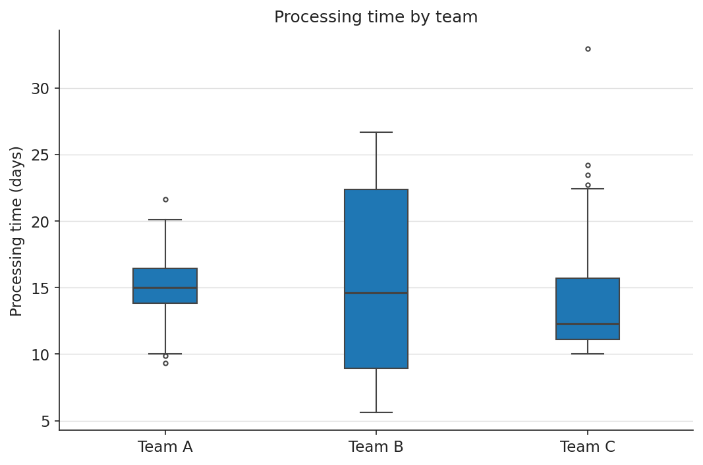
Box plot compresses distribution to five statistics. Team B is bimodal but its median and IQR are nearly identical to Team A’s. A non-statistician (or a distracted statistician) misses it entirely.
Python example
import matplotlib.pyplot as plt
import numpy as np
rng = np.random.default_rng(3)
team_a = rng.normal(15.0, 2.0, 220)
team_b = np.concatenate([
rng.normal( 9.0, 1.5, 110),
rng.normal(22.0, 2.0, 110),
])
team_c = 10 + rng.exponential(4.0, 220)
DATA = [team_a, team_b, team_c]
LABELS = ["Team A", "Team B", "Team C"]
fig, ax = plt.subplots(figsize=(7, 4.6), layout="constrained")
# Box plot: five summary statistics. Team B is bimodal at ~9 and ~22 days
# but its median and IQR are nearly identical to Team A's -- the bimodality
# is completely hidden from any reader who does not already know to look for it.
ax.boxplot(
DATA, tick_labels=LABELS, patch_artist=True,
boxprops=dict(facecolor="#1f77b4", edgecolor="#444444"),
medianprops=dict(color="#444444", linewidth=1.5),
whiskerprops=dict(color="#444444"), capprops=dict(color="#444444"),
flierprops=dict(markeredgecolor="#444444", marker="o", markersize=3),
)
ax.set(
title="Processing time by team", # describes the chart, not the finding
ylabel="Processing time (days)",
)
ax.spines[["top", "right"]].set_visible(False)
fig.savefig("distribution_problem.png", dpi=150, bbox_inches="tight")
plt.close(fig)
The fix: violin plot reveals distribution shape
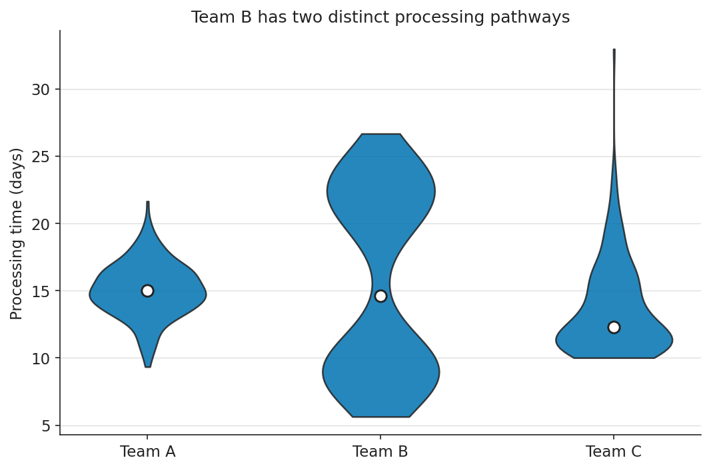
Violin plot: kernel density estimate encoded as shape directly. Team B’s two lobes are immediately visible without knowing what an IQR is.
Python example
import matplotlib.pyplot as plt
import numpy as np
rng = np.random.default_rng(3)
# Three teams with deliberately different shapes:
# A: tight unimodal -- the case box plots represent honestly.
# B: bimodal at ~9 and ~22 days -- the case box plots hide.
# C: right-skewed -- the case box plots represent partially.
team_a = rng.normal(15.0, 2.0, 220)
team_b = np.concatenate([
rng.normal( 9.0, 1.5, 110),
rng.normal(22.0, 2.0, 110),
])
team_c = 10 + rng.exponential(4.0, 220)
DATA = [team_a, team_b, team_c]
LABELS = ["Team A", "Team B", "Team C"]
INK = "#222222"
OI_BLUE = "#0072B2"
GRID = "#e0e0e0"
fig, ax = plt.subplots(figsize=(7, 4.6), layout="constrained")
# Violin plot: kernel density estimate encoded as shape directly.
# Team B's bimodal distribution produces two visible lobes that a
# non-statistician can read without knowing what an IQR is.
parts = ax.violinplot(DATA, showmedians=False, showextrema=False)
for body in parts["bodies"]:
body.set_facecolor(OI_BLUE)
body.set_edgecolor(INK)
body.set_alpha(0.85)
body.set_linewidth(1.2)
# White-on-dark median markers: high contrast, large enough at slide size.
medians = [np.median(d) for d in DATA]
ax.scatter(
np.arange(1, len(DATA) + 1), medians,
s=70, color="white", edgecolor=INK, linewidth=1.4, zorder=3,
)
ax.set_xticks(np.arange(1, len(DATA) + 1))
ax.set_xticklabels(LABELS)
ax.set(
title="Team B has two distinct processing pathways",
ylabel="Processing time (days)",
)
ax.spines[["top", "right"]].set_visible(False)
ax.yaxis.grid(True, color=GRID, linewidth=0.7)
ax.set_axisbelow(True)
fig.savefig("distribution_accessible.png", dpi=150, bbox_inches="tight")
plt.close(fig)
5. Radar (spider) charts
Radar charts are inherently fragile. The perceived area of the polygon depends on the arbitrary ordering of the axes, and overlaying more than two shapes produces an illegible tangle that breaks both colour and shape encoding. Small multiples or parallel coordinates almost always communicate the same comparison more clearly. Use a radar chart only when the question truly demands it (typically: two entities, five to seven comparable metrics). Keep it to two polygons, encode each with a distinct line style, and leave the second polygon unfilled.
The problem: five algorithms, all filled, colour-only
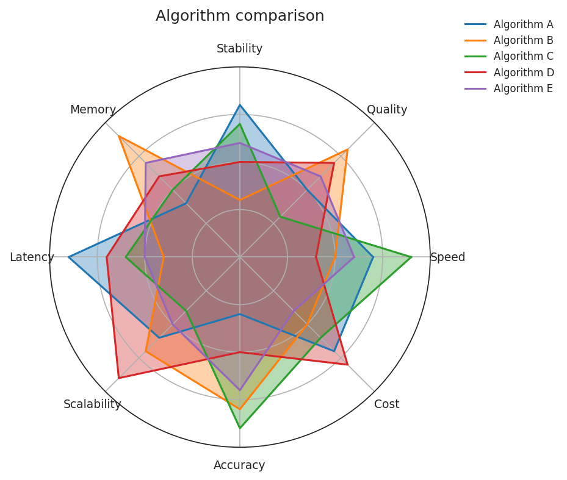
Five algorithms, eight metrics, all filled and overlapping. Colour is the only distinguishing channel. Greyscale and CVD readers see an indistinguishable tangle.
Python example
import matplotlib.pyplot as plt
import numpy as np
# Five algorithms, eight metrics. Each polygon filled -- the polygons
# block each other. Colour is the only distinguishing channel.
METRICS = ["Speed", "Quality", "Stability", "Memory",
"Latency", "Scalability", "Accuracy", "Cost"]
SCORES = [
[0.7, 0.5, 0.8, 0.4, 0.9, 0.6, 0.3, 0.7],
[0.5, 0.8, 0.3, 0.9, 0.4, 0.7, 0.8, 0.5],
[0.9, 0.3, 0.7, 0.5, 0.6, 0.4, 0.9, 0.6],
[0.4, 0.7, 0.5, 0.6, 0.7, 0.9, 0.5, 0.8],
[0.6, 0.6, 0.6, 0.7, 0.5, 0.5, 0.7, 0.4],
]
LABELS = ["A", "B", "C", "D", "E"]
TAB10 = ["#1f77b4", "#ff7f0e", "#2ca02c", "#d62728", "#9467bd"]
n = len(METRICS)
angles = np.linspace(0, 2 * np.pi, n, endpoint=False).tolist() + [0]
fig, ax = plt.subplots(figsize=(6.6, 5.4), subplot_kw=dict(polar=True))
for sc, color, label in zip(SCORES, TAB10, LABELS):
closed = sc + sc[:1]
ax.plot(angles, closed, color=color, linewidth=1.5, label=label)
ax.fill(angles, closed, color=color, alpha=0.35)
ax.set_xticks(angles[:-1])
ax.set_xticklabels(METRICS, fontsize=9)
ax.set_yticks([0.25, 0.5, 0.75])
ax.set_yticklabels([])
ax.set_title("Algorithm comparison")
ax.legend(loc="upper right", bbox_to_anchor=(1.35, 1.15), frameon=False)
fig.savefig("radar_problem.png", dpi=150, bbox_inches="tight")
plt.close(fig)
The fix: two algorithms, line style + colour, one unfilled
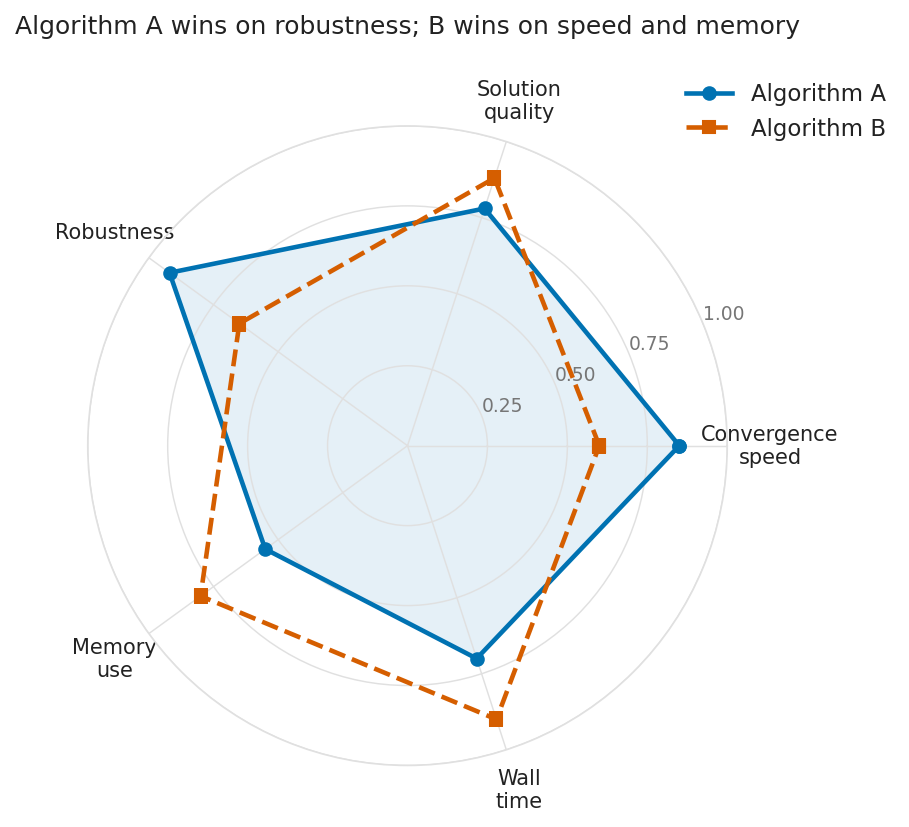
Two algorithms, five metrics, two independent encodings (colour and line style). Algorithm B’s polygon is unfilled so it never obscures Algorithm A’s shape.
Python example
import matplotlib.pyplot as plt
import numpy as np
METRICS = ["Convergence\nspeed", "Solution\nquality", "Robustness",
"Memory\nuse", "Wall\ntime"]
ALG_A = [0.85, 0.78, 0.92, 0.55, 0.70]
ALG_B = [0.60, 0.88, 0.65, 0.80, 0.90]
# Close the polygon by repeating the first point at the end.
def _closed(values):
return values + values[:1]
n = len(METRICS)
angles = np.linspace(0, 2 * np.pi, n, endpoint=False).tolist()
angles_closed = angles + angles[:1]
INK = "#222222"
GRID = "#e0e0e0"
OI_BLUE = "#0072B2"
OI_VERM = "#D55E00"
fig, ax = plt.subplots(figsize=(6.6, 5.4),
subplot_kw=dict(polar=True),
layout="constrained")
# Algorithm A: solid line + light fill establishes a baseline shape.
ax.plot(angles_closed, _closed(ALG_A),
color=OI_BLUE, linewidth=2.2, linestyle="-",
marker="o", markersize=6, label="Algorithm A")
ax.fill(angles_closed, _closed(ALG_A), color=OI_BLUE, alpha=0.10)
# Algorithm B: dashed line, no fill -- prevents A's shape from being
# obscured, which is the most common failure mode of overlaid radars.
ax.plot(angles_closed, _closed(ALG_B),
color=OI_VERM, linewidth=2.2, linestyle="--",
marker="s", markersize=6, label="Algorithm B")
ax.set_xticks(angles)
ax.set_xticklabels(METRICS, fontsize=10)
ax.set_yticks([0.25, 0.5, 0.75, 1.0])
ax.set_yticklabels(["0.25", "0.50", "0.75", "1.00"],
fontsize=9, color="#767676")
ax.set_ylim(0, 1.0)
ax.tick_params(pad=10)
ax.spines["polar"].set_color(GRID)
ax.grid(color=GRID, linewidth=0.7)
ax.set_title("Algorithm A wins on robustness; B wins on speed and memory",
pad=22)
ax.legend(loc="upper right", bbox_to_anchor=(1.28, 1.10), frameon=False)
fig.savefig("radar_accessible.png", dpi=150, bbox_inches="tight")
plt.close(fig)
6. Tree diagrams and hierarchies
A tree drawn as a flat image is invisible to screen readers and unusable for keyboard navigation. Hierarchy is semantically rich, and rendering it as pixels erases all that structure. Two things rescue a tree. First, the visual: high-contrast boxes and edges, branch labels on opaque backgrounds so they survive crossing lines, and progressive disclosure for subtrees too large for one screen. Second (non-negotiably): an exposed semantic equivalent as a nested HTML list with the same structure, which screen readers can navigate and keyboard users can traverse.
The problem: colour-only leaves, no branch labels
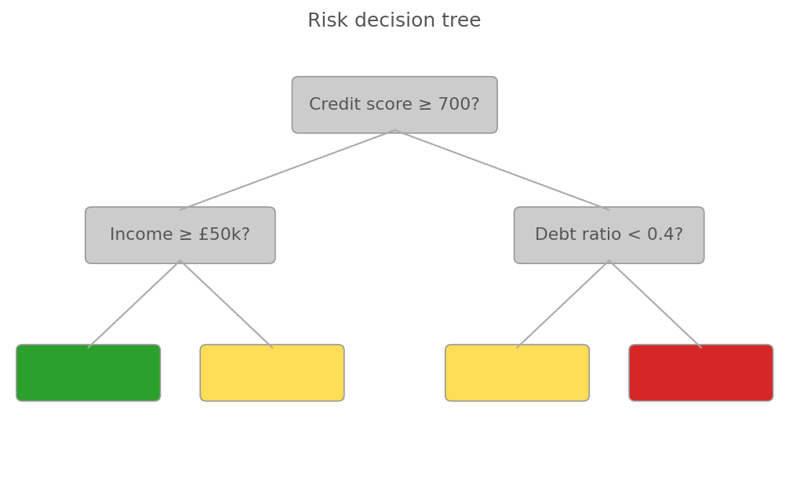
Red-green colour is the only signal for leaf outcomes. CVD readers see green and red as the same hue. No branch labels force the reader to track direction from memory.
Python example
import matplotlib.pyplot as plt
from matplotlib.patches import FancyBboxPatch
fig, ax = plt.subplots(figsize=(8.4, 4.8))
ax.set_xlim(0, 10); ax.set_ylim(0, 6); ax.axis("off")
# Colour-only leaf nodes: green, yellow, red.
# Red-green CVD readers see green and red as the same hue.
# Leaf boxes are empty -- colour is the only signal.
LEAF_COLORS = {"low": "#2ca02c", "med": "#ffdd57", "high": "#d62728"}
NODES = [
(5.0, 5.1, 2.6, 0.7, "Credit score \u2265 700?", None),
(2.2, 3.3, 2.4, 0.7, "Income \u2265 \u00a350k?", None),
(7.8, 3.3, 2.4, 0.7, "Debt ratio < 0.4?", None),
(1.0, 1.4, 1.8, 0.7, "", "low"),
(3.4, 1.4, 1.8, 0.7, "", "med"),
(6.6, 1.4, 1.8, 0.7, "", "med"),
(9.0, 1.4, 1.8, 0.7, "", "high"),
]
# Edges: thin, low-contrast, NO "Yes"/"No" labels.
EDGES = [
((5.0, 4.75), (2.2, 3.65)),
((5.0, 4.75), (7.8, 3.65)),
((2.2, 2.95), (1.0, 1.75)),
((2.2, 2.95), (3.4, 1.75)),
((7.8, 2.95), (6.6, 1.75)),
((7.8, 2.95), (9.0, 1.75)),
]
for x, y, w, h, text, leaf in NODES:
face = LEAF_COLORS.get(leaf, "#cccccc") # grey decision nodes, low contrast
ax.add_patch(FancyBboxPatch(
(x - w/2, y - h/2), w, h,
boxstyle="round,pad=0.04,rounding_size=0.08",
linewidth=0.8, edgecolor="#999999", facecolor=face,
))
if text:
ax.text(x, y, text, ha="center", va="center",
fontsize=10.5, color="#555555") # low contrast
for (x1, y1), (x2, y2) in EDGES:
ax.plot([x1, x2], [y1, y2], color="#aaaaaa", linewidth=1.0)
ax.set_title("Risk decision tree", fontsize=12, color="#555555")
fig.savefig("tree_problem.png", dpi=150, bbox_inches="tight")
plt.close(fig)
The fix: text in every node, branch labels, high contrast
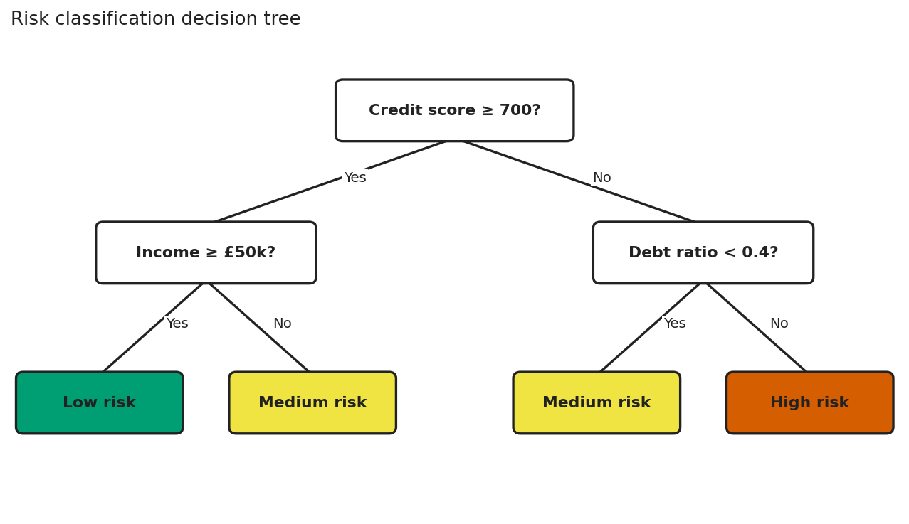
High-contrast nodes, edge labels on opaque backgrounds, and leaf node meaning carried by text, not by colour alone.
Semantic example
<!--
The visual tree is decorative. The list below is the source of truth
for screen readers and keyboard users: native semantics, native
navigation, no ARIA gymnastics required.
-->
<nav aria-label="Risk classification decision tree">
<ul>
<li>
Credit score ≥ 700?
<ul>
<li>Yes → Income ≥ £50k?
<ul>
<li>Yes → <strong>Low risk</strong></li>
<li>No → <strong>Medium risk</strong></li>
</ul>
</li>
<li>No → Debt ratio < 0.4?
<ul>
<li>Yes → <strong>Medium risk</strong></li>
<li>No → <strong>High risk</strong></li>
</ul>
</li>
</ul>
</li>
</ul>
</nav>
7. Fitness landscapes and 3D surfaces
Three-dimensional surface plots, used when visualising objective functions in metaheuristics or evolutionary algorithms, fail in two ways. They almost always encode elevation with a continuous colour gradient (jet, hsv, or matplotlib's old default) that is not perceptually uniform and not CVD-safe, making relative peak heights ambiguous. Static perspective also occludes peaks behind foreground features. The accessible version uses a perceptually uniform colourmap engineered for every form of CVD (cividis), overlays contour lines so geometry is encoded by line position as well as colour, and annotates the global optimum in text so the takeaway survives rendering failures.
The problem: jet colourmap, no contours, no annotation
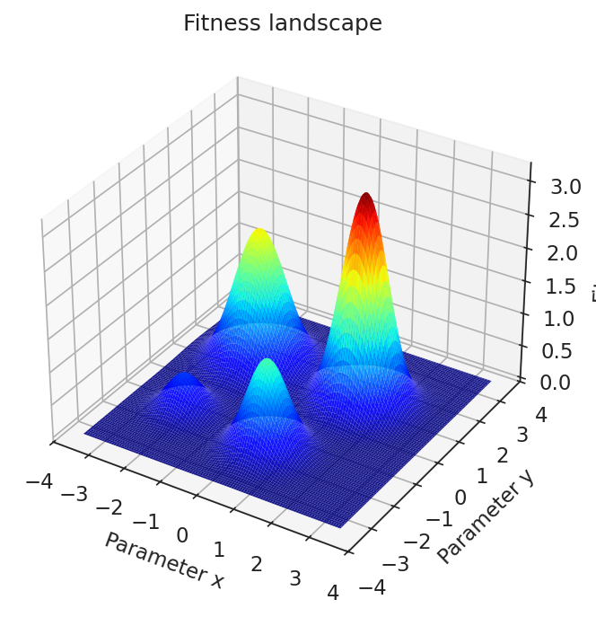
Jet colourmap: not perceptually uniform, not CVD-safe. No contours, so elevation is colour-only. No annotation, so the global optimum must be inferred visually.
Python example
import matplotlib.pyplot as plt
import numpy as np
from mpl_toolkits.mplot3d import Axes3D # noqa: F401
GRID = np.linspace(-3.5, 3.5, 220)
X, Y = np.meshgrid(GRID, GRID)
Z = (
3.2 * np.exp(-((X - 1.4) ** 2 + (Y - 1.0) ** 2) / 0.6)
+ 2.1 * np.exp(-((X + 1.6) ** 2 + (Y - 1.2) ** 2) / 0.8)
+ 1.4 * np.exp(-((X - 0.5) ** 2 + (Y + 1.8) ** 2) / 0.5)
+ 0.6 * np.exp(-((X + 2.0) ** 2 + (Y + 1.5) ** 2) / 0.4)
)
fig = plt.figure(figsize=(8.8, 5.2))
ax = fig.add_subplot(111, projection="3d")
# Jet: not perceptually uniform; saturated red creates false salience.
# Greyscale conversion collapses multiple fitness values to the same grey.
ax.plot_surface(X, Y, Z, cmap="jet",
rstride=2, cstride=2, linewidth=0, antialiased=True)
# No contour lines: elevation is encoded by colour alone.
# No annotation: the global optimum is not communicated in text.
ax.set_xlabel("Parameter x")
ax.set_ylabel("Parameter y")
ax.set_zlabel("Fitness")
ax.set_title("Fitness landscape") # generic -- no takeaway
ax.view_init(elev=32, azim=-58)
fig.savefig("fitness_problem.png", dpi=150, bbox_inches="tight")
plt.close(fig)
The fix: cividis, contour lines, annotated optimum
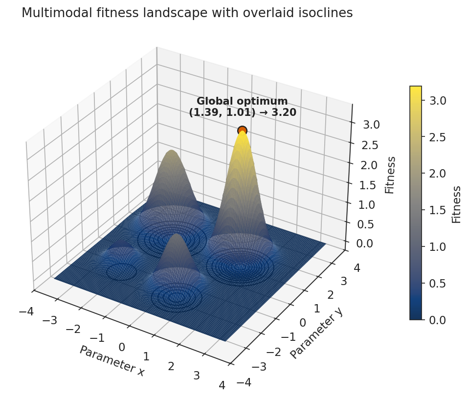
Cividis colourmap, black isoclines on the surface and floor, and a text annotation stating the global optimum coordinates.
Python example
import matplotlib.pyplot as plt
import numpy as np
from mpl_toolkits.mplot3d import Axes3D # noqa: F401 (registers 3d projection)
# A multimodal fitness landscape: one global optimum and three local optima.
# This is the canonical kind of surface for evolutionary computation work.
GRID = np.linspace(-3.5, 3.5, 220)
X, Y = np.meshgrid(GRID, GRID)
Z = (
3.2 * np.exp(-((X - 1.4) ** 2 + (Y - 1.0) ** 2) / 0.6)
+ 2.1 * np.exp(-((X + 1.6) ** 2 + (Y - 1.2) ** 2) / 0.8)
+ 1.4 * np.exp(-((X - 0.5) ** 2 + (Y + 1.8) ** 2) / 0.5)
+ 0.6 * np.exp(-((X + 2.0) ** 2 + (Y + 1.5) ** 2) / 0.4)
)
# Locate the global optimum in data space so we can report it in text.
# Visual readers see the peak; text-only readers get the same answer.
gi, gj = np.unravel_index(np.argmax(Z), Z.shape)
gx, gy, gz = X[gi, gj], Y[gi, gj], Z[gi, gj]
INK = "#222222"
OI_VERM = "#D55E00"
fig = plt.figure(figsize=(8.8, 5.2), layout="constrained")
ax = fig.add_subplot(111, projection="3d")
# Cividis: perceptually uniform and engineered for every common form of CVD.
# Maps identically when converted to greyscale -- safe for print.
surf = ax.plot_surface(
X, Y, Z, cmap="cividis",
rstride=2, cstride=2,
linewidth=0, antialiased=True, alpha=0.92,
)
# Floor projection: contour lines encode elevation as line geometry,
# independent of the colourmap.
ax.contour(X, Y, Z, levels=10, zdir="z", offset=Z.min() - 0.2,
colors=INK, linewidths=0.8)
# Isoclines on the surface itself give the eye a contour map even when
# a projector desaturates the colourmap.
ax.contour(X, Y, Z, levels=8, colors=INK, linewidths=0.6, alpha=0.5)
# Mark and *label* the global optimum. Never make the reader infer the
# main result from the colourmap alone.
ax.scatter([gx], [gy], [gz], color=OI_VERM, s=80,
edgecolor=INK, linewidth=1.2, zorder=10)
ax.text(gx, gy, gz + 0.35,
f"Global optimum\n({gx:.2f}, {gy:.2f}) \u2192 {gz:.2f}",
color=INK, fontsize=10, fontweight="bold", ha="center")
ax.set_xlabel("Parameter x")
ax.set_ylabel("Parameter y")
ax.set_zlabel("Fitness")
ax.set_title("Multimodal fitness landscape with overlaid isoclines")
ax.view_init(elev=32, azim=-58)
cbar = fig.colorbar(surf, ax=ax, shrink=0.65, pad=0.08)
cbar.set_label("Fitness")
fig.savefig("fitness_accessible.png", dpi=150, bbox_inches="tight")
plt.close(fig)
The optional third view: interactive 3D exploration
For exploratory analysis (not final publication graphics), an interactive 3D view can be useful. A movable Plotly surface lets the reader rotate the landscape and inspect occluded regions directly. The tradeoff is accessibility and reproducibility: interactive canvases still need text summaries and data fallbacks.
Interactive option for exploration: rotate and zoom to inspect local optima and valley structure.
Where data science papers and slides go wrong
Academic papers and conference slides have their own characteristic failures. Some are the same as the corporate ones, some are specific to the medium.
The commonest paper failure is font size. The standard figure workflow embeds a plot at 6×4 inches at 150 dpi, the axis labels look fine in the source notebook, and then the figure is scaled down to fit a two-column layout or a slide. The text that was 10pt in the notebook is now 6pt in print. Reviewers have complained about this in every journal for forty years and it has not stopped happening because the person making the figure is not the person trying to read it at arm’s length in a conference room.
The commonest slide failure is information density. Slides prepared as reference documents, meant to be read rather than presented, get shown on a projector to a room of people who have thirty seconds to understand each one. The accessible version is not a simplified version; it is a version designed for the actual context of use, which means one message per slide, large text, and a figure that can be decoded without a legend.
These aren't rare; they are the things experienced reviewers complain about in every other paper they read, and the things audiences notice in every other talk. They persist because we treat the figure as an artefact of the analysis instead of as a piece of communication that has its own production standards.
© Ken Reid. All rights reserved.
A practical accessibility-first checklist
If you want a working version of this, here is the checklist I run my own outputs through. It takes about five minutes per figure and it has caught a lot of mistakes.
- Print it greyscale (or simulate it). If the chart breaks, your encoding relies on colour alone. Add shape, line type, or hatching.
- Run it through a
CVD simulator. Most modern tools have one built in. If two categories collapse into the same hue under deuteranopia, the palette is wrong. - Check contrast. Axis labels and legend text against background should clear
WCAG 4.5:1 for normal text and 3:1 for graphical objects. Greys on white frequently fail. - Set a font floor. No label below 9pt at the rendered size, ever. For slides, no label below the equivalent of 18pt at projected size. If the chart has so much information it doesn’t fit, the chart has too much information.
- Write
alt text that contains the takeaway. The alt text should make sense to a reader who never sees the image. “Sales by quarter, with Q3 2024 sharply lower than Q1–Q2” is alt text. “Sales chart” is not. - Provide the data. A linked CSV, a properly marked-up HTML table, or an SVG with a data attribute. The chart is just one view of the underlying numbers.
- Strip non-encoding elements. Drop shadows, 3D effects, gradient fills, decorative backgrounds, and redundant gridlines all go. If you cannot say what the element encodes, it does not earn its pixels.
- Title with the takeaway. “Variant A cut error rates by a third” is a title. “Error rate by month and variant” is a description.
- Test the rendered context. The thumbnail. The greyscale print. The phone screen. The dark-mode dashboard. The projected slide. If the chart fails any of them, it is a chart for a single condition, not a finished output.
© Ken Reid. All rights reserved.
Why this is accessibility work, not box-ticking
Calling this accessibility work rather than “accessibility compliance” matters because compliance language frames the work as a cost: a tax on shipping, paid grudgingly, audited late. Accessibility language frames it as the actual job: deliver value to your users, in the conditions in which they actually consume your output, accounting for who they are.
Once you take the product framing seriously, accessibility stops being a separate stream. It becomes the same conversation as “what does the user need to see in five seconds?” and “what is the one thing this chart is trying to say?” and “does the dashboard answer the question the user actually has?” Those are good questions to ask about any data output, regardless of whether anyone in the audience uses a screen reader. They get asked more often when accessibility is the constraint.
This accessibility work is not in tension with rigour. The most rigorous figures I have seen in academic papers are also, almost always, the most accessible: clean encodings, redundant channels, large readable labels, captions that include the takeaway, and underlying data available in a supplement. The figures that look slick but communicate poorly tend to be the ones with the weakest underlying analysis. Accessibility and rigour are not competing virtues. They are the same virtue, applied to different parts of the pipeline.
The work data scientists produce gets used to make decisions, sometimes large ones. Anyone in the audience who cannot decode the chart is being decided about without being able to push back. That is the part that turns this from a craft argument into an ethical one. If your output is the basis for a budget, a hiring choice, a policy, or a clinical decision, every reader who is locked out of the chart is locked out of the conversation. Accessibility-first design is, among other things, the discipline of not doing that to your audience.
Common questions
Isn’t this just “make charts simpler”?
Mostly, yes. The interesting bit is that “simpler” tends to be argued from taste, and taste arguments are easy to ignore. Accessibility gives you a non-taste reason that’s harder to wave away: a measurable fraction of your audience cannot read the chart you just shipped. That tends to move the conversation faster than “Tufte would not approve.”
What about colour palettes: is Viridis enough?
Viridis (and Cividis, Plasma, Inferno) is colour-blind-safe and prints reasonably in greyscale, so it’s a strong default for sequential data. For categorical data, the Okabe–Ito 8-colour palette is the standard
Do interactive dashboards solve the access problem by themselves?
No. Interactivity helps sighted users explore, but it can make
How do I write good alt text for a chart?
Three sentences at most. One says what the chart is (“Line chart of monthly active users by platform, January 2023 to April 2026”). One states the main pattern (“iOS rose steadily; Android plateaued in mid-2024; Web fell after Q3 2025”). One, optional, gives context if the takeaway needs it (“Web decline coincides with the redesign rollout”). Don’t describe pixels; describe what the reader is supposed to learn.
What about data-table accessibility specifically?
Use real <th> headers, not bolded <td>. Set scope="col" and scope="row". Put units in the headers, not in every cell. Align numbers on the decimal. Use consistent precision. If the table is sortable or filterable, make sure the controls are keyboard-accessible. Most spreadsheet exports fail half of these out of the box, which is why “just paste the spreadsheet” is the wrong answer.
Doesn’t this take longer?
Slightly, the first few times, then no. Once you have a default palette, a default chart template with sensible font sizes and grid styling, a habit of writing the takeaway as the title, and a snippet for
Where does this fit into your other writing?
It sits next to the portfolio piece, which is about communicating your work to employers, and the second brain piece, which is about communicating with your future self. This one is about communicating with the actual audience the work was for. They’re the same skill applied at different ranges.
References
- Guha, T., Fertig, E. J., & Deshpande, A. (2022). Generating colorblind-friendly scatter plots for single-cell data. eLife, 11, e82128. https://doi.org/10.7554/elife.82128
- Lee, B., Choe, E. K., Isenberg, P., Marriott, K., & Stasko, J. (2020). Reaching Broader Audiences With Data Visualization. IEEE Computer Graphics and Applications, 40(2), 82–90. https://doi.org/10.1109/mcg.2020.2968244
- Aung, T., Niyeha, D., Shagihilu, S., Mpembeni, R., Kaganda, J., Sheffel, A., & Heidkamp, R. (2019). Optimizing data visualization for reproductive, maternal, newborn, child health, and nutrition (RMNCH&N) policymaking: data visualization preferences and interpretation capacity among decision-makers in Tanzania. Global Health Research and Policy, 4. https://doi.org/10.1186/s41256-019-0095-1
- Patel, A. M., Baxter, W., & Porat, T. (2024). Toward Guidelines for Designing Holistic Integrated Information Visualizations for Time-Critical Contexts: Systematic Review. Journal of Medical Internet Research, 26, e58088. https://doi.org/10.2196/58088
- Wang, L., Zhang, J., Weng, M., Kang, M., & Su, S. (2024). Unlocking Semantic Information Representation in Bar Graph Design. IEEE Transactions on Visualization and Computer Graphics, 1–14. https://doi.org/10.1109/tvcg.2024.3418145
- Birch, J. (2012). Worldwide prevalence of red-green color deficiency. Journal of the Optical Society of America A, 29(3), 313–320. https://doi.org/10.1364/JOSAA.29.000313
- Chan, K. C., et al. (2025). A global perspective of color vision deficiency: Awareness, diagnosis, and lived experiences. Cureus, 17(8). https://doi.org/10.7759/cureus.12385717
- Hasrod, N. (2016). Defects of colour vision: A review of congenital and acquired colour vision deficiencies. African Vision and Eye Health, 75(1), 1–16. https://doi.org/10.4102/aveh.v75i1.365
- Sharpe, L. T., Stockman, A., Jägle, H., & Nathans, J. (1999). Normal and defective colour vision. In K. Knoblauch (Ed.), Normal and Defective Colour Vision. Oxford University Press.
PS making this blog post prompted me to improve accessibility across my blogs and website generally, I hope it does the same for you, too.